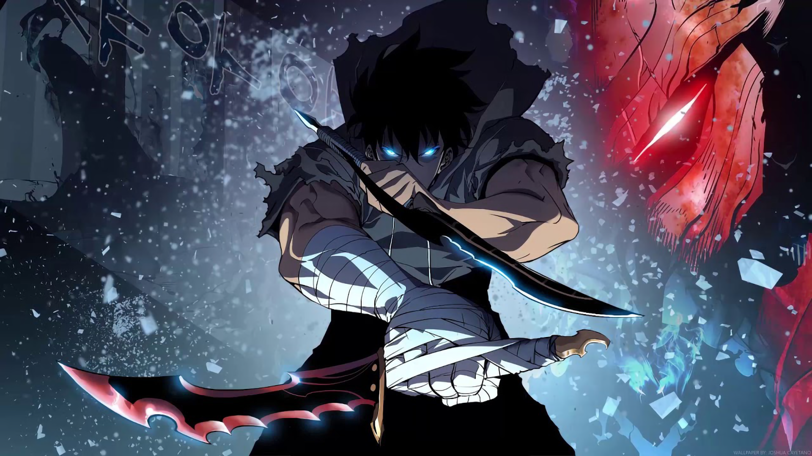
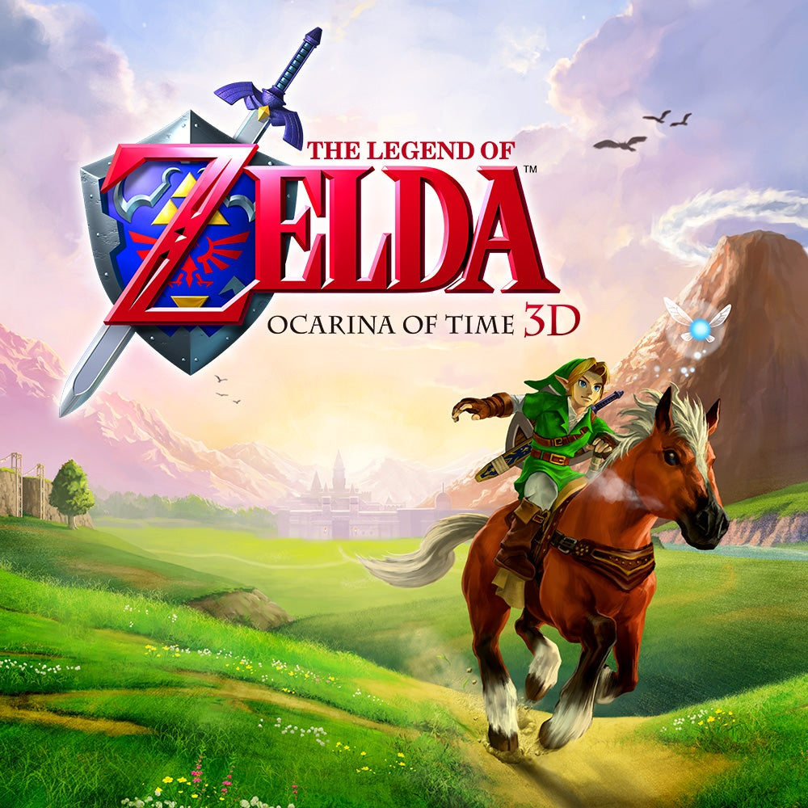
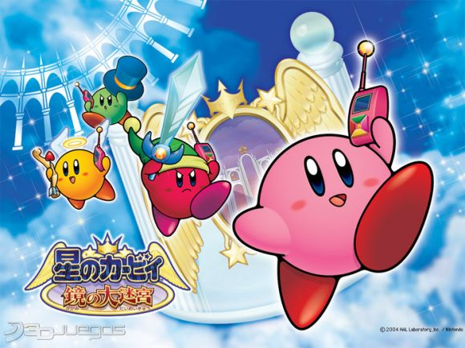
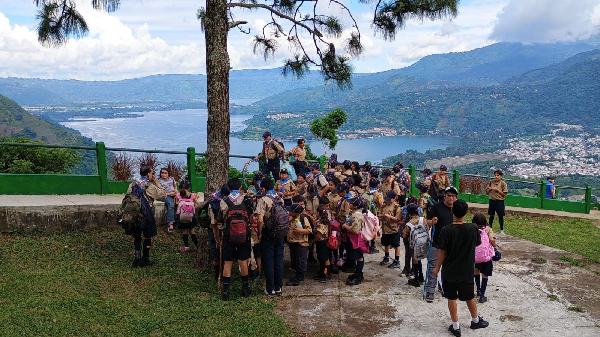
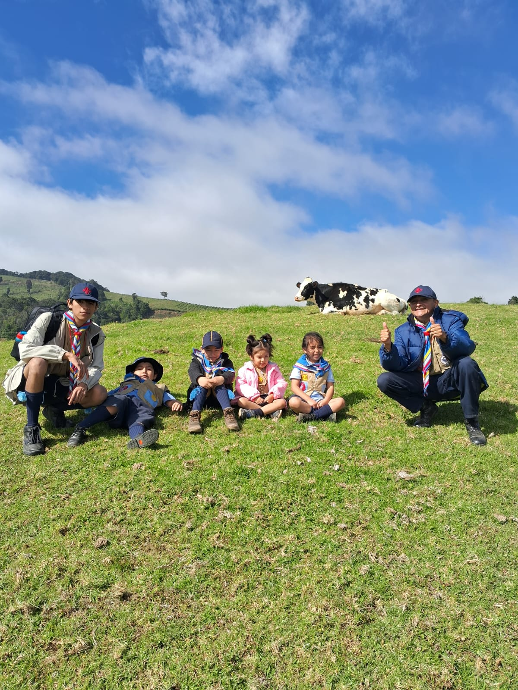
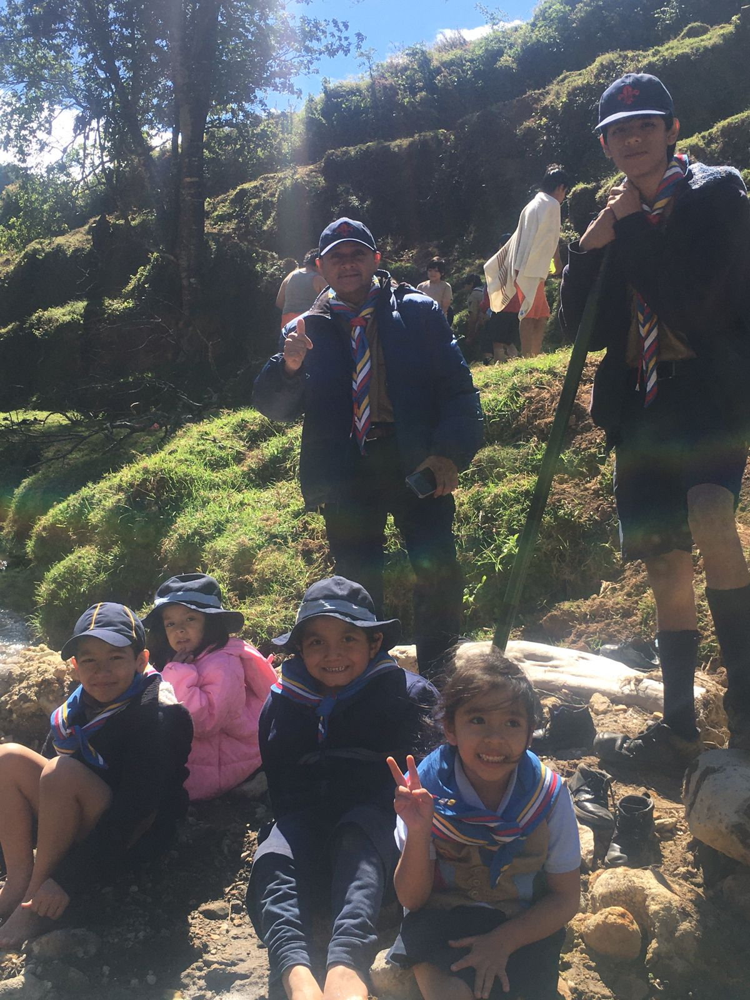
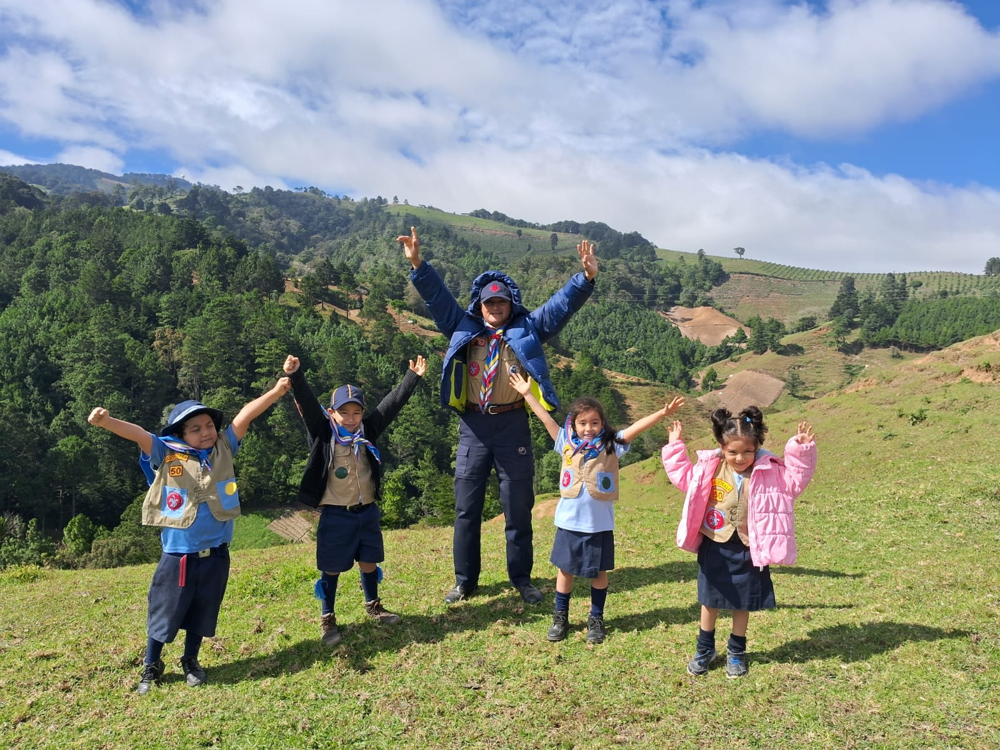
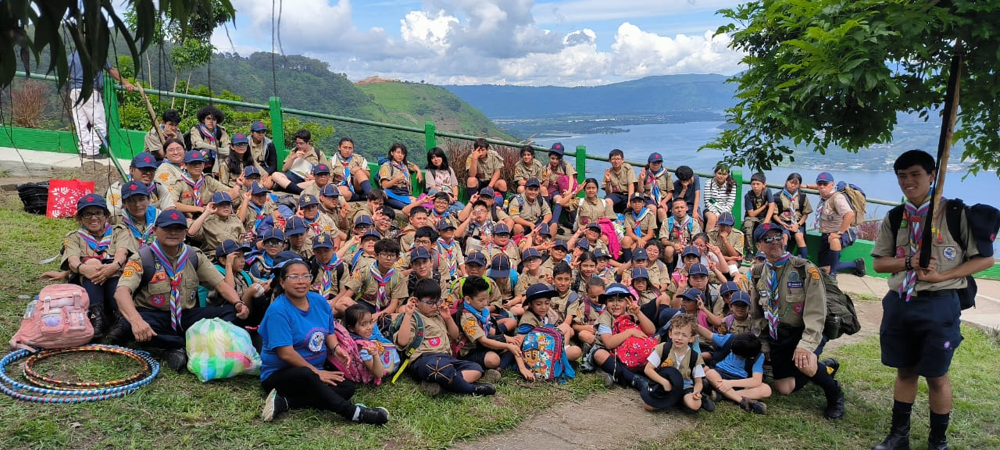

Mis Gustos
Bueno mis gustos son bastantes.
Primero la musica es algo que me gusta mucho mas cuando programo no escucho musica igual como la mayoria de jovenes de mi edad, lo que me gusta escuchar a mi es musica electronica o en ingle, como todos no tengo solo un artista favorito
tengo mas que serian como:
- 1. Michael Jackson
- 2. Avicii
- 3. Lil Nas X
- 4. The Fat Rat
- 5. Imagine Dragons


Segundo seria el anime que lo mas que me gusta es tipo de peleas y como tipo misterio como:
- 1. Dragon Ball
- 2. Solo Leveling
- 3. Ragna Crimson
- 4. Shadow Garden
- 5. Classroom Of The Elite

Tercero es un gusto que comenzo en diciembre del año pasado 2024 que es hacer ejercicio por ahorita no hago mucho ya que necesito subir grasas para poder ganar musculo y tambien hago ejercicio por mi salud ya que mi masa muscular dio un gran bajon hace 2 años y yo no me habia dado cuenta hasta que mis pápas me llevaron al nutriologo el año pasado por julio.
Cuarto me gustan los videojuegos no es que juegue mucho pero lo que mas juego es:
- 1. Call Of Duty
- 2. Clash Royale
- 3. Emuladores como Zelda Ocarina Of Time y Kirby en el laberinto de espejos
- 4. League Of Legends
- 5. Free Fire


Tiempo que me dedico a cada Actividad
Musica: A esta actividad le dedico basicamente cuando llego a mi casa y haciendo calculos tal vez unas 8 horas aproximadamente
Anime: Pues en epoca de estudio no le dedico mucho tiempo tal vez el fin de semana solo 1 hora y media, ya si hablamos de vacaciones tal vez unas 5 horas de anime.
Ejercicio: A esta actividad dedico 5 dias a la semana 1 hora y media.
Juegos: En epoca de estudio al igual que el anime no le decido mucho tiempo solo fin de semana unas 3 horas, ya en vacaciones si le dedico unas 6 horas.

Grupo Scout #50
Esta es una actividad que dedico todos los sábados del año, en 2010 entre al grupo scout #50 San Ignacio del Loyola, es una actividad bonita para varios niños y jovenes incluso adultos, desde chiquito participe en el grupo como integrante participaba en juegos y varias excursiones que hacian, despues de la pandemia el grupo estubo apunto de desaparecer ya que muchos dejaron de llegar y tambien porque era en un parque del hipodromo y ya no se hacian las actividades en el Colegio Loyola, despues de unos años en el año 2024 por abril el jefe de grupo hiso un acuerdo con el Padre el Director para que pudieramos activar en el colegio y hacer una campaña para ver si los niños del colegio querian entrar al grupo y entonces con esto el grupo volvio a ser como antes con muchos integrantes de nuevo y padres que apoyan al grupo, yo en este entonces ya no participo en juegos ahora loo que hago es dirigir osea ponerles juegos a los niños mas pequeños que tienen entre 4 a 7 años, es una actividad muy bonita ya que hay cosas que no se pueden aprender fuera del grupo y mucha actividad al aire libre para que los niños no esten solo en sus casas encerrados como la mayoria en esta epoca solo con el telefono.



